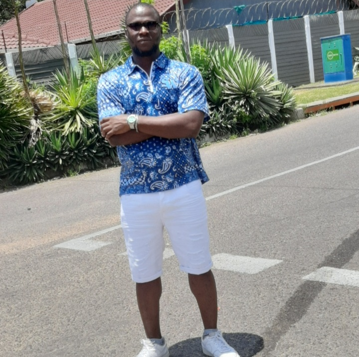

About Me

Hello! I am Ugochukwu Onunkwo, a web developer with a passion for front-end development and user
experiences. I am from Anambra, Nigeria. I enjoy jogging, cooking and reading. Currently,
I'm studying Web Development at BYU-Idaho. I'm excited to learn and grow in this field.
In my free time, I love exploring new places and trying different cuisines. I'm passionate about
building innovative and user-friendly websites that provide exceptional experiences.
I'm looking forward to collaborating with like-minded individuals and continuing to learn and grow
as a web developer.
My Journey
My journey into web development began with a fascination for how digital interfaces could connect
people across the globe. Through coursework and personal projects, I've honed skills in HTML, CSS,
JavaScript, and various frameworks, always aiming for clean, responsive, and accessible designs.
Here's what I bring to the table:
- Strong foundation in front-end technologies.
- Passion for user-centric design and development.
- Experience with project management and agile methodologies from school and personal projects.
- A commitment to continuous learning and staying updated with modern web standards.
When I'm not coding, you'll find me exploring nature, which inspires my creativity, or engaging
with the latest tech trends. My goal is to leverage my skills to contribute to innovative projects
that make a difference.
Feel free to explore my GitHub Profile GitHub Profile
to see some of my work or check out
my Resume for a detailed look at my academic and professional journey.